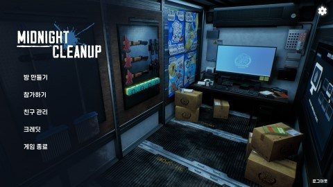

Unreal Engine 5 · 2024.04 ~ 11 (8개월) · 기획 3, 프로그래밍 6, 아트 3 · 시스템·레벨·밸런스 기획, PM
미드나잇 클린업
귀신 들린 집을 친구들과 제한 시간 안에 청소하는 협동 게임. G-STAR 2024 KOCCA 부스에 전시했습니다.
- 그때 한 일
- 귀신과 장애물이 나오는 규칙을 파워 레벨과 엔티티 시스템으로 묶었습니다. 조정할 값은 프로그래밍 팀에 요청해 매니저로 따로 뺐고, 그 뒤로는 QA 때마다 숫자만 바꿔 다시 테스트했습니다. 2·3인 맵은 4인 맵 작업량의 50%·70% 규칙으로 줄였습니다.
- PM으로 한 일
- 기획서 작성 지침과 Notion 칸반을 만들어 12명이 같은 문서와 일정을 보게 했습니다. 기획자 셋의 의견 충돌로 2개월 작업이 폐기된 뒤에는 목표를 다시 잡아 끝까지 완성했습니다.
- 결과
- FGT 22명 중 밸런스 만족 27.3%. 최종 시연에서는 303명 중 81명이 가장 만족한 요소로 밸런스를 꼽아 2위가 됐습니다.
- 지금 AI에게
- 바꿀 값과 바꾸면 안 되는 규칙을 먼저 나눠 줍니다. Greedy Marshmallow의 [확정]과 [재량]이 여기서 나왔습니다.